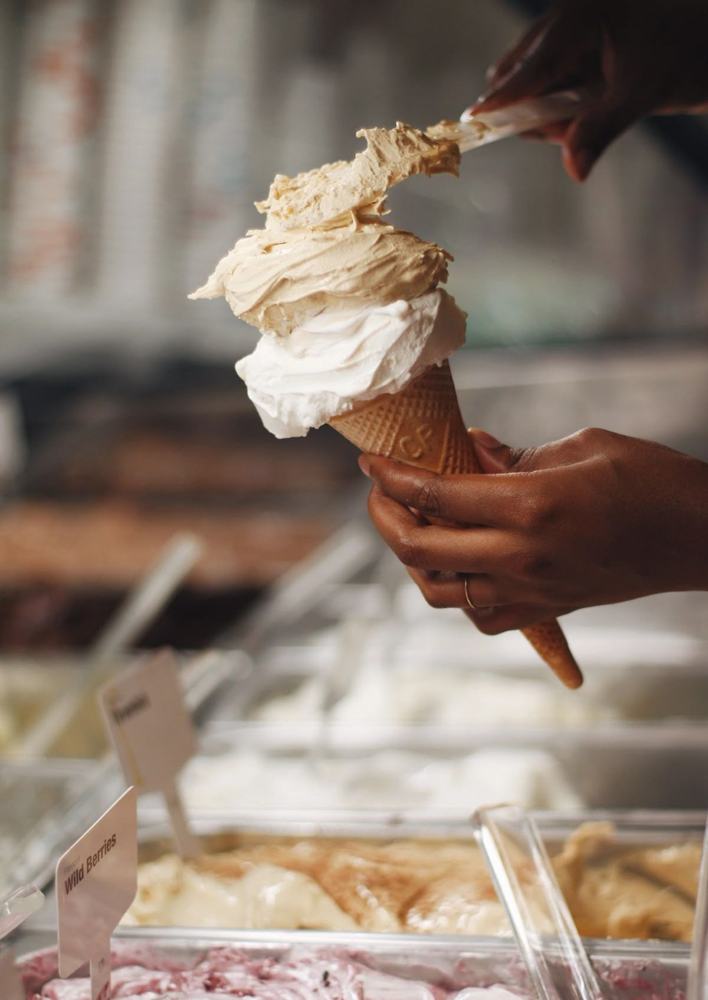
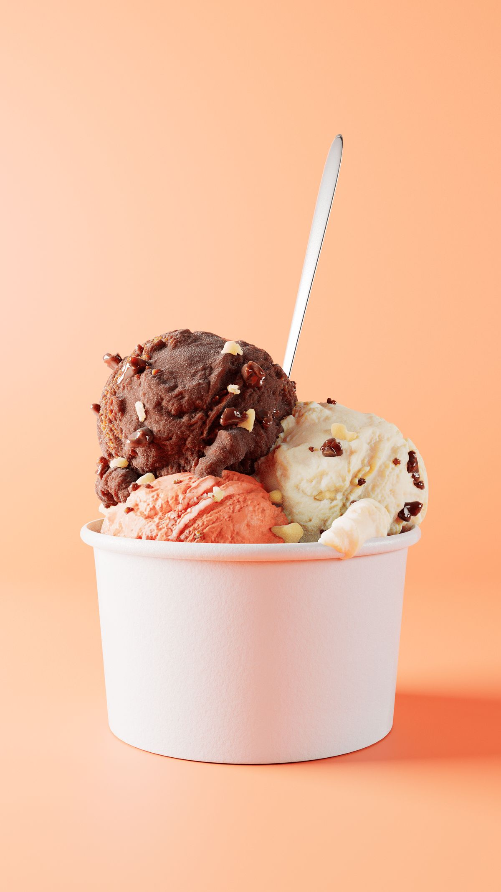

 |
Em uma pequena rua cheia de vida, nasceu a Me Gusta, uma sorveteria diferente de todas as outras.
Mas havia um detalhe curioso: a Me Gusta não tinha sorvete. Isso mesmo — nada de bolas tradicionais, nada
de casquinhas comuns. O que ela oferecia eram os melhores gelatos do mundo, inspirados em receitas autênticas vindas da Itália, da
Espanha e de outros cantos da Europa.
Os fundadores acreditavam que o Brasil merecia provar algo além do óbvio. Queriam trazer a cremosidade única do gelato,
feito com menos gordura, mais frescor e sabores que despertam memórias de viagens. Cada colherada era uma
experiência cultural: pistache da Sicília, chocolate belga, frutas tropicais reinventadas com técnicas italianas.
No começo, os clientes estranhavam:
— “Mas vocês não têm sorvete?”
E os atendentes respondiam com um sorriso:
— “Não precisamos. Temos gelato. E ele vai conquistar você.”
Logo, a Me Gusta virou ponto de
encontro. Jovens, famílias e viajantes se reuniam para experimentar sabores que não se encontravam em nenhum outro lugar. O nome, Me Gusta, refletia exatamente o que acontecia: cada pessoa saía dizendo “eu gosto, eu amo, eu quero mais”. |
 |